dir.create("data", showWarnings = FALSE)
download.file(
"https://raw.githubusercontent.com/Shians/WEHI_RNASeq_Course/main/data/mouse_mammary_counts.csv",
"data/mouse_mammary_counts.csv"
)
download.file(
"https://raw.githubusercontent.com/Shians/WEHI_RNASeq_Course/main/data/mouse_mammary_samples.csv",
"data/mouse_mammary_samples.csv"
)2 RNA-seq workshop
Which genes are differentially expressed between three cell types in the mouse mammary gland? In this workshop we answer that question for basal, luminal progenitor (LP) and mature luminal (ML) cells. The cells were sorted from the mammary glands of female virgin mice, with three replicates per cell type (nine samples), and sequenced on Illumina RNA-seq platforms. The data comes from the RNAseq123 workflow.
By the end you will have a table of differentially expressed (DE) genes and an MA plot for each pairwise comparison, plus a heatmap of the top DE genes, all saved to an output folder.
To get there, we follow the limma-voom workflow:
- filtering out lowly expressed genes
- normalisation
- creating a multidimensional scaling (MDS) plot
- creating a design matrix
- fitting gene-wise linear models, with empirical Bayes moderation to better estimate gene-wise variability
- testing for differential expression
The focus is on running the workflow and building the data structures the packages need, rather than on the underlying statistics, which we cover only as far as needed to interpret the results. For more detail, see the limma User’s Guide by typing help("limma") and following the links.
2.1 Data files
The data comes as two files, the form in which you will usually receive RNA-seq data from a sequencing facility or a processing pipeline:
mouse_mammary_counts.csv: the count matrix. Each row is a gene and each column is a sample, giving the number of reads assigned to that gene in that sample. The first three columns annotate the genes: the Entrez gene ID (ENTREZID), the gene symbol (SYMBOL) and the chromosome (TXCHROM).mouse_mammary_samples.csv: the sample metadata. Each row describes one sample: its name, GEO accession, cell type (group) and the sequencing lane it was run on.
You can download the files using the following commands:
2.2 R packages
The packages required for this workshop can be installed with the following commands:
if (!requireNamespace("BiocManager", quietly = TRUE))
install.packages("BiocManager")
BiocManager::install("RNAseq123")
# used for reading data, data manipulation and plotting
install.packages("tidyverse")
# used for the heatmap, and for labels in the Extra content plots
install.packages(c("pheatmap", "ggrepel"))2.3 Loading in read count data and annotation
We will use the edgeR package to store the data and run the first steps of the analysis.
To use the edgeR package we first need to construct a DGEList object. This object contains three key pieces of data:
counts: the main data of this object, a matrix of count values with samples along the columns and features/genes along the rows.samples: a data frame containing annotation for the samples. The rows in this table describe the corresponding column of the counts data.genes: a data frame containing annotation for the genes in the counts matrix. The rows in this table describe the corresponding row in the counts matrix.
NoteData objects
Data objects in general are a way to store related pieces of information together. Often they provide features to maintain the relationships between the pieces of information. For example, in a DGEList object, the counts are stored as a matrix while samples and genes are stored as data frames. When you subset the DGEList object, the rows and columns of the counts matrix are subset along with the corresponding rows of the samples and genes data frames. This prevents errors that can occur if the user tries to manually subset all three pieces of information separately.
We first load the packages and read in both files.
# load required packages
library(tidyverse)
library(edgeR)
library(limma)
counts_table <- read_csv("data/mouse_mammary_counts.csv")
samples <- read_csv("data/mouse_mammary_samples.csv")
counts_table# A tibble: 27,179 × 12
ENTREZID SYMBOL TXCHROM `10_6_5_11` `9_6_5_11` purep53 `JMS8-2` `JMS8-3`
<dbl> <chr> <chr> <dbl> <dbl> <dbl> <dbl> <dbl>
1 497097 Xkr4 chr1 1 2 342 526 3
2 100503874 Gm19938 <NA> 0 0 5 6 0
3 100038431 Gm10568 <NA> 0 0 0 0 0
4 19888 Rp1 chr1 0 1 0 0 17
5 20671 Sox17 chr1 1 1 76 40 33
6 27395 Mrpl15 chr1 431 771 1368 1268 1564
7 18777 Lypla1 chr1 768 1722 2517 1923 3865
8 100503730 Gm19860 <NA> 4 8 6 2 11
9 21399 Tcea1 chr1 810 977 2472 1870 2251
10 58175 Rgs20 chr1 452 358 17 14 622
# ℹ 27,169 more rows
# ℹ 4 more variables: `JMS8-4` <dbl>, `JMS8-5` <dbl>, `JMS9-P7c` <dbl>,
# `JMS9-P8c` <dbl>samples# A tibble: 9 × 4
sample geo_accession group lane
<chr> <chr> <chr> <chr>
1 10_6_5_11 GSM1545535 LP L004
2 9_6_5_11 GSM1545536 ML L004
3 purep53 GSM1545538 Basal L004
4 JMS8-2 GSM1545539 Basal L006
5 JMS8-3 GSM1545540 ML L006
6 JMS8-4 GSM1545541 LP L006
7 JMS8-5 GSM1545542 Basal L006
8 JMS9-P7c GSM1545544 ML L008
9 JMS9-P8c GSM1545545 LP L008 The group column of samples was read in as text. We convert it to a factor, which tells R that it is a categorical variable and fixes the order of its levels.
samples <- samples %>%
mutate(group = parse_factor(group, levels = c("Basal", "LP", "ML")))
NoteA brief detour to factors
Factors are a special data type used to encode categorical variables. They have several useful properties compared with regular character vectors:
- They allow you to specify the order of the levels.
- They are stored as integers but displayed as labels.
- They encode all the valid levels of the factor, even if they are not present in the data.
Specifying the order of the levels is useful because it allows you to rearrange labels when used in plots. In this data we would have the “Basal” group first, followed by “LP” and then “ML”. Using parse_factor() also allows you to check that the values are all valid levels. For example, if one of the samples were labelled “Bassal” instead of “Basal”, it would throw an error. You can read the R for Data Science chapter on factors for more information, and see the forcats package for many useful functions for working with factors.
2.4 Creating the DGEList object
The counts file mixes gene annotation with the counts, so we split it into its two parts. The annotation columns become the genes data frame. The remaining columns become the count matrix, with the Entrez IDs as row names so that each row stays labelled with its gene.
genes <- counts_table %>%
select(ENTREZID, SYMBOL, TXCHROM)
counts <- counts_table %>%
select(-ENTREZID, -SYMBOL, -TXCHROM) %>%
as.matrix()
rownames(counts) <- genes$ENTREZIDEach row of samples must describe the matching column of counts. DGEList() cannot check this for us, and a mismatch would silently assign samples to the wrong groups, so we check it ourselves before building the object.
all(colnames(counts) == samples$sample)[1] TRUEThe sample names line up, so we can create the DGEList object. Because samples contains a group column, DGEList() uses it as the experimental group of each sample.
dge <- DGEList(counts = counts, samples = samples, genes = genes)
dgeAn object of class "DGEList"
$counts
10_6_5_11 9_6_5_11 purep53 JMS8-2 JMS8-3 JMS8-4 JMS8-5 JMS9-P7c
497097 1 2 342 526 3 3 535 2
100503874 0 0 5 6 0 0 5 0
100038431 0 0 0 0 0 0 1 0
19888 0 1 0 0 17 2 0 1
20671 1 1 76 40 33 14 98 18
JMS9-P8c
497097 0
100503874 0
100038431 0
19888 0
20671 8
27174 more rows ...
$samples
group lib.size norm.factors sample geo_accession lane
10_6_5_11 LP 32863052 1 10_6_5_11 GSM1545535 L004
9_6_5_11 ML 35335491 1 9_6_5_11 GSM1545536 L004
purep53 Basal 57160817 1 purep53 GSM1545538 L004
JMS8-2 Basal 51368625 1 JMS8-2 GSM1545539 L006
JMS8-3 ML 75795034 1 JMS8-3 GSM1545540 L006
JMS8-4 LP 60517657 1 JMS8-4 GSM1545541 L006
JMS8-5 Basal 55086324 1 JMS8-5 GSM1545542 L006
JMS9-P7c ML 21311068 1 JMS9-P7c GSM1545544 L008
JMS9-P8c LP 19958838 1 JMS9-P8c GSM1545545 L008
$genes
ENTREZID SYMBOL TXCHROM
497097 497097 Xkr4 chr1
100503874 100503874 Gm19938 <NA>
100038431 100038431 Gm10568 <NA>
19888 19888 Rp1 chr1
20671 20671 Sox17 chr1
27174 more rows ...
Note
What you can do with data objects is determined by the package that the object comes from. You will need to read the package documentation to find out how to access data from the object. Here edgeR informs us that the DGEList has data that can be accessed as if it were a list, for example dge$counts or dge$samples.
Now we have a data object that can be used for downstream analysis.
2.5 Filtering
The first step of our analysis is to filter out lowly expressed genes. There are two main problems with low-abundance genes:
- Technical variation is more problematic for low-abundance genes. This variation is thought to be due to two factors: insufficient mixing and low sampling fraction1.
- Insufficient mixing of solutions during library preparation can result in uneven distribution of reads.
- RNA-seq can be thought of as sampling. Measurement errors will occur simply due to the random nature of the sampling process. This problem affects low-abundance RNA species more because the relative error for small count values is larger than it would be for more highly abundant RNA species.
- Genes that are very lowly expressed do not produce sufficient information to be useful for biological interpretation. For example, it is very hard to believe the biological significance of genes that have counts ranging from 0 to 3 across samples even if they come up as statistically significant.
Filtering out lowly expressed genes means fewer statistical tests, so less multiple testing correction and more power to detect DE genes2. ‘Power’ is your ability to detect true positives. DE analysis runs one test per gene, and with thousands of tests some will be significant purely by chance. ‘Multiple testing correction’ adjusts the p-values to control these false positives, at the cost of reduced power. The fewer tests we perform, the smaller that cost.
The edgeR package provides the filterByExpr() function to automate gene filtering. By default, it aims to keep genes with a count of 10 or more, in at least as many samples as the smallest experimental group. In our experiment, there are three cell types, each with three samples. Therefore we retain only genes that have 10 or more counts in three or more samples. The actual filtering is done on counts per million (cpm), to prevent bias against samples with small library sizes. This complex procedure is the reason why the package provides a function to perform the filtering for you.
The output of this function is a vector of logicals, indicating which genes (rows) should be kept and which should be filtered out.
keep <- filterByExpr(dge)
table(keep)keep
FALSE TRUE
10555 16624 proportions(table(keep))keep
FALSE TRUE
0.3883513 0.6116487 dge <- dge[keep, , keep.lib.sizes = FALSE] # drop the filtered genes and recalculate library sizes
dim(dge$counts)[1] 16624 9We can see that we now have 16624 genes. We started with 27179 genes, meaning that ~40% of genes have been filtered out.
2.6 Library-size normalisation
After filtering, our next step is to normalise the data. Normalisation refers to the process of adjusting the data to reduce or eliminate systematic bias. This allows the data to be meaningfully compared across samples or experimental groups.
There are two main factors that need to be normalised for in RNA-seq:
- Sequencing depth/library size: technically, sequencing a sample to half the depth will give, on average, half the number of reads mapping to each gene3.
- RNA composition: if a large number of genes are unique to, or highly expressed in, only one experimental condition, the sequencing capacity available for the remaining genes in that sample is decreased. For example, suppose only five genes are studied in two experimental groups. If one gene is particularly high in group A, then with limited sequencing depth that gene will reduce the counts of the remaining four genes. As a result, the remaining four genes appear under-expressed in group A compared to group B, even though the true amount of gene product is equal for these four genes3.
Sequencing depth is accounted for by calculating the cpm. This metric is calculated by:
- taking the library size (sum of all counts for a sample),
- dividing this by 1,000,000 to get the ‘per million’ scaling factor,
- then dividing all read counts for each gene in that sample by the ‘per million’ scaling factor
RNA composition can be accounted for by using more sophisticated normalisation methodologies. We will use ‘trimmed mean of M-values’ (TMM), which estimates relative RNA levels from RNA-seq data3. Under the assumption that most genes are not differentially expressed, TMM calculates a library size scaling factor for each library (sample) from the genes that remain after trimming those with the most extreme log-fold-changes and expression levels.
TipGoing deeper: how TMM works
TMM calculates the scaling factor for each library using the following steps:
- calculate the gene expression log-fold-changes and absolute expression values for pairwise samples (selecting one sample from the experiment as a reference)
- remove the genes with the highest and lowest log-fold-changes and absolute expression values
- take a weighted mean of the remaining genes (where the weight is the inverse of the approximate asymptotic variances). This gives the normalisation factor for each library (sample)
Subsequent steps in this analysis will use log-cpm values, calculated using the normalisation factors to scale each library size.
We can calculate the normalisation factors with normLibSizes(), specifying that we want to use the "TMM" method:
dge <- normLibSizes(dge, method = "TMM")This function calculates the normalisation factors for each library (sample) and puts this information in the samples data frame. Note that it takes dge (our DGEList object) as input and returns a DGEList object as well.
Let’s take a look at our normalisation factors:
dge$samples group lib.size norm.factors sample geo_accession lane
10_6_5_11 LP 32857304 0.8943956 10_6_5_11 GSM1545535 L004
9_6_5_11 ML 35328624 1.0250186 9_6_5_11 GSM1545536 L004
purep53 Basal 57147943 1.0459005 purep53 GSM1545538 L004
JMS8-2 Basal 51356800 1.0458455 JMS8-2 GSM1545539 L006
JMS8-3 ML 75782871 1.0162707 JMS8-3 GSM1545540 L006
JMS8-4 LP 60506774 0.9217132 JMS8-4 GSM1545541 L006
JMS8-5 Basal 55073018 0.9961959 JMS8-5 GSM1545542 L006
JMS9-P7c ML 21305254 1.0861026 JMS9-P7c GSM1545544 L008
JMS9-P8c LP 19955335 0.9839203 JMS9-P8c GSM1545545 L008These normalisation factors are close to 1 for all samples, suggesting minimal difference in RNA composition between samples.
2.7 Visualising the effect of normalisation
To see the effect of TMM normalisation, we plot each sample’s distribution of log-counts as a boxplot, before and after normalisation. ggplot2 needs the data in long format, with one row per observation, so we first reshape the count matrix.
# log-transform the raw counts (adding 0.5 avoids taking the log of zero),
# then convert the matrix to a tibble, keeping row names as a "gene" column
as_tibble(log(dge$counts + 0.5), rownames = "gene") %>%
# reshape from wide to long: one row per gene-sample pair
pivot_longer(
where(is.numeric),
names_to = "sample", values_to = "expression"
) %>%
ggplot(aes(x = sample, y = expression)) +
geom_boxplot()
We can compare this to the cpm values. The cpm() function automatically applies normalisation factors if they are present.
as_tibble(cpm(dge, log = TRUE), rownames = "gene") %>%
pivot_longer(
where(is.numeric),
names_to = "sample", values_to = "expression"
) %>%
ggplot(aes(x = sample, y = expression)) +
geom_boxplot()
We see that by performing normalisation on our data, the gene expression values of each sample now have similar medians and quantiles. This indicates that the relative expression values of each sample can be more meaningfully compared.
2.8 MDS plots
Before we perform statistical tests, it’s useful to perform some exploratory visual analysis to get an overall idea of how our data is behaving.
MDS is a way to visualise distances between sets of data points (samples in our case). It is a dimensionality reduction technique, similar to principal components analysis (PCA). We treat gene expression in samples as if they were coordinates in a high-dimensional coordinate system. We can then find “distances” between samples as we do between points in space. The goal of the algorithm is to find a representation in lower-dimensional space such that the distance between any two points in high-dimensional space is preserved in lower dimensions.
The plotMDS() function from limma creates an MDS plot from a DGEList object.
plotMDS(dge)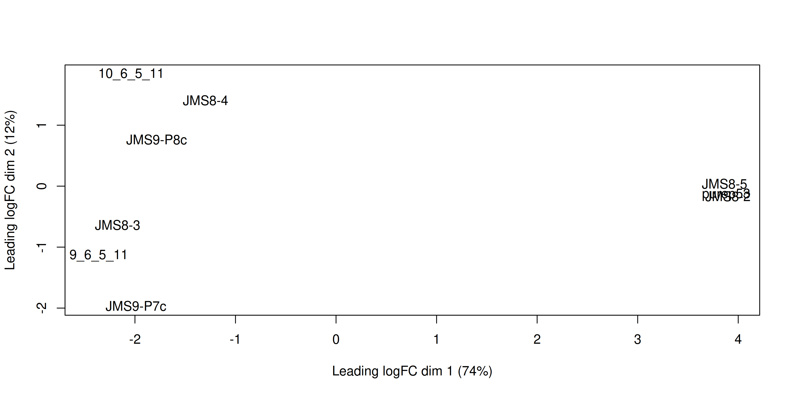
Each point on the plot represents one sample and is ‘labelled’ using the sample name. The distances between samples in the resulting plot can be interpreted as the typical log2-fold-change between the samples, for the most differentially expressed genes.
We can change the labelling to use the name of the group the sample belongs to instead:
plotMDS(dge, labels = dge$samples$group)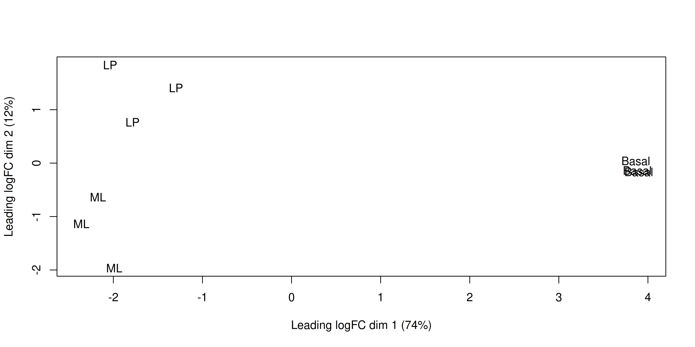
This shows us that samples of the same cell type tend to cluster together, meaning that the gene expression profiles are similar for samples within a cell type. The ‘Basal’ type samples are quite close together while the ‘LP’ (luminal progenitor) and ‘ML’ (mature luminal) type samples are further apart, signifying that their expression profiles are more variable.
TipCheckpoint
The next chunk recreates every object we have built so far, from loading the packages to normalising the data. Run it if you are starting from this point or have lost your objects; otherwise you can skip it.
# load required packages
library(tidyverse)
library(edgeR)
library(limma)
# read in the counts and sample metadata
counts_table <- read_csv("data/mouse_mammary_counts.csv")
samples <- read_csv("data/mouse_mammary_samples.csv") %>%
mutate(group = parse_factor(group, levels = c("Basal", "LP", "ML")))
# split the counts table into gene annotation and a count matrix
genes <- counts_table %>%
select(ENTREZID, SYMBOL, TXCHROM)
counts <- counts_table %>%
select(-ENTREZID, -SYMBOL, -TXCHROM) %>%
as.matrix()
rownames(counts) <- genes$ENTREZID
# create DGEList object
dge <- DGEList(counts = counts, samples = samples, genes = genes)
# filter lowly expressed genes
keep <- filterByExpr(dge)
dge <- dge[keep, , keep.lib.sizes = FALSE]
# normalise the data for library size and RNA composition
dge <- normLibSizes(dge, method = "TMM")2.9 Linear modelling
To identify differentially expressed genes from our normalised gene expression data, we will use the limma package to fit linear models to the genes. Linear models are a broad class of statistical models that fit the value of a response (or dependent) variable as a linear function of one or more explanatory (or independent) variables (also called covariates).
The general form of a linear model looks like this:
\(Y = \beta_{0} + \beta_{1}X_{1} + \beta_{2}X_{2}... + \epsilon\)
This equation is saying that a response variable of interest \(Y\) is equal to a constant (\(\beta_{0}\)) plus the sum of the covariates (\(X_{i}\)) each multiplied by a constant coefficient (\(\beta_{i}\)) and some error term (\(\epsilon\)). The error term is the difference between the observed value and the predicted value of the model and is assumed to have a normal distribution with mean 0 and some variance.
Our experiment is quite simple, since there is only a single covariate, the cell type. The true benefit of using linear models is in their ability to accommodate more complex designs including multiple covariates.
To fit the linear models in the limma-voom framework we need two objects in addition to our data:
- A design matrix, representing the covariates.
- A contrast matrix, representing the specific comparison we wish to make.
2.9.1 Design matrix
The first step to fitting a linear model is to specify a design matrix. The design matrix specifies the values of the covariates for each sample, and is represented as a matrix for mathematical convenience.
To generate a design matrix, we use the function model.matrix(), with the expression ~0 + group. This returns a matrix representing the design where there is no intercept term and group is the only covariate. If we omit the 0 then there would be an intercept in the model, and if we included more covariates then more columns would be generated.
design <- model.matrix(~0 + group, data = dge$samples)
design groupBasal groupLP groupML
10_6_5_11 0 1 0
9_6_5_11 0 0 1
purep53 1 0 0
JMS8-2 1 0 0
JMS8-3 0 0 1
JMS8-4 0 1 0
JMS8-5 1 0 0
JMS9-P7c 0 0 1
JMS9-P8c 0 1 0
attr(,"assign")
[1] 1 1 1
attr(,"contrasts")
attr(,"contrasts")$group
[1] "contr.treatment"There are nine rows, one for each sample. Along the columns are the names of the groups. The values in the cells denote membership of the particular sample for a particular group. As our groups in this case are mutually exclusive, each row contains only a single 1 to denote membership in a single group.
2.9.2 Contrasts
Contrast matrices are companions to design matrices. They are used to specify the comparison of interest. In our case, we have three cell types: Basal, LP and ML. So if we are to perform differential expression analysis, we are most likely interested in the differences between only two of the groups at a time. Contrast matrices let us specify which comparison we’d like to make, and are also represented as a matrix just like the design.
A contrast matrix can be made using the makeContrasts() function. Within this function, we specify the name of each specific contrast and the formula for that contrast. For example, the BasalvsLP contrast compares the difference between the Basal and LP groups. Note that the names of the cell types must be written exactly as they are in the column names of our design matrix (see above).
In addition to the individual contrasts, the function must know about the design of the model. This is passed through the levels argument, which either accepts a matrix with the column names corresponding to levels of your experimental groups, or the levels themselves as a character vector. Here we first simplify the column names of our design matrix to make it easier to read. Then we create the contrast matrix using the makeContrasts() function.
colnames(design) <- c("Basal", "LP", "ML")
contr_matrix <- makeContrasts(
BasalvsLP = "Basal - LP",
BasalvsML = "Basal - ML",
LPvsML = "LP - ML",
levels = design # alternatively 'levels = colnames(design)'
)
contr_matrix Contrasts
Levels BasalvsLP BasalvsML LPvsML
Basal 1 1 0
LP -1 0 1
ML 0 -1 -1The order of the contrast sets the sign: for Basal - LP, a positive log-fold-change means higher expression in Basal. Had we written LP - Basal, genes up-regulated in Basal would instead have a negative log-fold-change.
TipGoing deeper: why the columns sum to zero
The numbers in each column of a contrast matrix sum to 0. Each contrast compares groups against each other, so the weights on one side balance those on the other.
2.9.3 Variance modelling with voom
We are now ready to fit our linear models. limma fits linear models to the data with the assumption that the underlying data is normally distributed. Count data is generally not normally distributed, but log transforming count data gives it a roughly normal distribution sufficient for linear models to work well. To do this, limma transforms the raw count data to log-cpm using library sizes and the normalisation factors we calculated previously.
In addition to the normalisation steps, the limma-voom pipeline uses the voom() function to generate weights for the individual observations based on a modelled mean-variance relationship. The mean-variance relationship is used to estimate the variance of each individual observation of sample-gene expression, and by applying these weights to the linear modelling step, it helps the data better meet the assumptions of the linear model and results in more accurate statistical inferences.
The voom() function takes as arguments our DGEList object and our design matrix. It also optionally outputs a plot of the mean-variance relationship of our data, called the ‘voom plot’.
v <- voom(dge, design, plot = TRUE)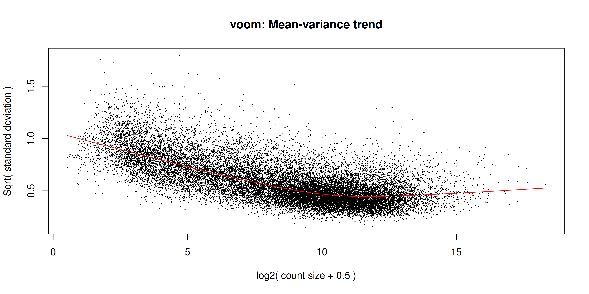
The voom plot shows the mean-variance relationship of the data. Each point is a gene: the x-axis is its average log2 expression, and the y-axis is the square root of its residual standard deviation from the linear model (“sqrt(standard deviation)”). The red line is the trend fitted across all genes. The idea is that the variance of a gene can be estimated as a function of its mean expression, and that this estimate is more accurate than the direct calculation of the variance.
A good voom plot shows a smooth trend that decreases as expression increases: lowly expressed genes are more variable than highly expressed ones. If the trend instead rises sharply at the low-expression end, many very lowly expressed genes remain, which suggests filtering was insufficient.
The output of voom() (our variable v) is an EList object which contains the following elements:
genes: a data frame of gene annotation data.targets: a data frame of sample data.E: a numeric matrix of normalised log-cpm values.weights: a numeric matrix of precision weights.design: the design matrix.
2.9.4 Fitting the linear model
We are now ready to fit our linear model with lmFit(), which estimates the coefficients defined in our design matrix design. The resulting object, vfit, is an MArrayLM object. It contains information about our genes (the same data frame as genes from our EList object v above), the design matrix and a number of statistical outputs. Of most interest to us are the coefficients, stored in an element called coefficients. The first rows of this matrix are shown below. Each gene is a row and is labelled using its Entrez ID. Each column gives coefficients for each of our cell types. These coefficients are weighted averages of the log-cpm of each gene in each group.
vfit <- lmFit(v)
head(vfit$coefficients) Basal LP ML
497097 3.0241632 -4.490392 -3.944477
20671 0.2681245 -2.488746 -2.024896
27395 4.3271126 3.901078 4.365378
18777 5.2069566 4.976083 5.654066
21399 5.2108711 4.901842 4.876380
58175 -1.9296994 3.581328 3.133985We can then use contrasts.fit() to calculate coefficients for each contrast (or ‘comparison’) we specified in our contr_matrix. The output is also an MArrayLM object. When we inspect the coefficients element now, we can see that each column is a contrast that we specified in our contrast matrix.
vfit <- contrasts.fit(vfit, contrasts = contr_matrix)
head(vfit$coefficients) Contrasts
BasalvsLP BasalvsML LPvsML
497097 7.5145557 6.96864007 -0.54591559
20671 2.7568708 2.29302094 -0.46384989
27395 0.4260347 -0.03826548 -0.46430022
18777 0.2308732 -0.44710891 -0.67798213
21399 0.3090294 0.33449065 0.02546125
58175 -5.5110274 -5.06368468 0.44734272A difference significantly greater than 0 means the gene is up-regulated in the first group of the contrast; significantly less than 0 means it is down-regulated. If the difference is not significantly different from 0, we have failed to establish a difference in expression between the two groups.
2.10 Statistical testing
To actually test if the values are significantly different from 0, we use the eBayes() function to compute a moderated t-statistic for each gene, given a fitted linear model. ‘Moderated’ refers to empirical Bayes moderation, which borrows information across genes to obtain more accurate measures of variability for each gene. This also increases our power to detect differentially expressed genes.
TipGoing deeper: other statistics from eBayes()
As well as moderated t-statistics, eBayes() computes moderated F-statistics, which test all contrasts at once, and the log-odds of differential expression for each gene. The log-odds appears as the B column in the output of topTable().
efit <- eBayes(vfit)We can now look at the number of differentially expressed genes using the decideTests() function. The output of this function is a matrix where each column is a contrast (comparison of interest) and each row is a gene. The numbers 1, -1 and 0 mean up-regulated, down-regulated or not significantly differentially expressed, respectively. The statistical significance is determined by the adjusted p-value being less than 0.05.
By default, decideTests() adjusts p-values for multiple testing using the Benjamini and Hochberg4 method, but several others are also available.
dt <- decideTests(efit)
head(dt)TestResults matrix
Contrasts
BasalvsLP BasalvsML LPvsML
497097 1 1 0
20671 1 1 0
27395 0 0 0
18777 0 -1 -1
21399 0 1 0
58175 -1 -1 0To obtain the total number of differentially expressed genes for each comparison, we can add the function summary():
summary(dt) BasalvsLP BasalvsML LPvsML
Down 4500 4850 2701
NotSig 7307 6996 11821
Up 4817 4778 2102Both comparisons involving the basal cells have a large number of DE genes (more than 9,000 each), while LP vs ML has the fewest (about half as many). This matches the MDS plot, where the basal samples separate from the LP and ML samples along the first dimension, and the LP and ML samples sit closer to each other.
The function topTable() can be used to obtain more information on the differentially expressed genes for each contrast. topTable() takes as arguments the MArrayLM object output by eBayes() (efit), the contrast name of interest and the number of top differentially expressed genes to output. Note that the contrast name must be given in quotes and must be exactly as written in the contrast matrix contr_matrix.
It outputs a data frame with the following information:
- Gene details: gene information, from the
geneselement of theMArrayLMobject (efit). logFC: the log2-fold-change of the contrast.AveExpr: the average log2 expression of that gene.t: the moderated t-statistic.P.Value: the p-value.adj.P.Val: the adjusted p-value.B: log-odds that the gene is differentially expressed.
top <- topTable(efit, coef = "BasalvsLP", n = Inf)
head(top) ENTREZID SYMBOL TXCHROM logFC AveExpr t P.Value
12521 12521 Cd82 chr2 -4.095479 7.069637 -35.46821 3.383539e-12
22249 22249 Unc13b chr4 -4.350553 5.663171 -32.38571 8.648521e-12
16324 16324 Inhbb chr1 -4.721417 6.460922 -30.80826 1.447137e-11
14245 14245 Lpin1 chr12 -3.768977 6.294017 -29.94805 1.937313e-11
218518 218518 Marveld2 chr13 -5.215232 4.930008 -30.87689 1.414332e-11
12759 12759 Clu chr14 -5.306847 8.856581 -29.55253 2.221529e-11
adj.P.Val B
12521 4.660973e-08 18.41326
22249 4.660973e-08 17.42652
16324 4.660973e-08 17.06291
14245 4.660973e-08 16.85869
218518 4.660973e-08 16.76959
12759 4.660973e-08 16.70221By default the genes are sorted by the B statistic, so the genes with the strongest evidence of DE come first. Because the contrast is Basal - LP, a positive logFC means the gene is higher in basal cells and a negative logFC means it is higher in LP cells. The six genes shown here all have negative logFC, so they are more highly expressed in LP cells.
2.11 MA plot
The MA plot is a plot of log-fold-change (M-values) against log-expression averages (A-values). This is a common plot in RNA-seq analysis to visualise the result of differential expression tests. It can be created using the plotMA() function from the limma package. Creating this plot requires three pieces of information:
object = efit: the fitted object containing the log-fold-change and log-expression averages.coef = 1: the column number of the contrast to plot since there are three different contrasts fitted within the object.status = dt[, "BasalvsLP"]: a vector of numerics denoting whether a gene is up-regulated or down-regulated.
plotMA(efit, coef = 1, status = dt[, "BasalvsLP"])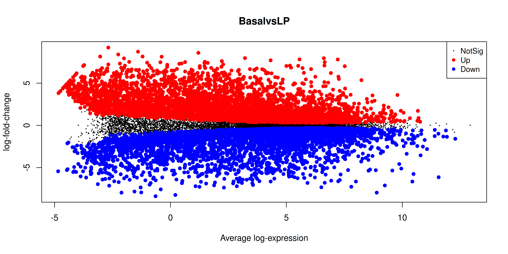
The coloured points are the DE genes: up-regulated genes (higher in basal cells) sit above zero and down-regulated genes (higher in LP cells) sit below it. Notice that the band of non-significant genes (black) is widest at the low-expression end (left of the plot). Counts for these genes are small and noisy, so they need a larger log-fold-change before the difference counts as significant.
2.12 Heatmap
Finally we can create a heatmap of the differentially expressed genes. The heatmap is a useful way to visualise the expression of the differentially expressed genes across the samples. We can use the pheatmap package to create the heatmap.
We take the top 50 DE genes from each contrast, combine them, and plot their log-cpm values, labelled with gene symbols.
# combine the top 50 genes from each contrast, removing duplicates
top_genes <- bind_rows(
topTable(efit, coef = "BasalvsLP", n = 50),
topTable(efit, coef = "BasalvsML", n = 50),
topTable(efit, coef = "LPvsML", n = 50)
) %>%
select(ENTREZID, SYMBOL, TXCHROM) %>%
distinct()
# extract log-cpm values for these genes. ENTREZID is numeric, so convert it
# to character to select rows by ID rather than by position
top_gene_expr <- cpm(dge, log = TRUE)[as.character(top_genes$ENTREZID), ]
# label rows with gene symbols for readability
rownames(top_gene_expr) <- top_genes$SYMBOLWe draw the heatmap with pheatmap(), scaling each gene to a z-score so that patterns across samples are comparable between genes. Try removing each option to see how it affects the heatmap, and explore further options in the pheatmap() documentation.
library(pheatmap)
# sample annotation: colour bar showing each sample's group
sample_anno <- dge$samples %>%
select(group)
heatmap <- pheatmap(
top_gene_expr,
color = colorRampPalette(c("blue", "white", "red"))(100), # custom colour scale
scale = "row", # z-score each gene across samples
annotation_col = sample_anno, # add sample group annotation
border_color = NA,
cluster_rows = TRUE, # cluster genes
cluster_cols = TRUE, # cluster samples
show_rownames = TRUE,
show_colnames = TRUE,
fontsize_row = 6 # small font so gene labels fit
)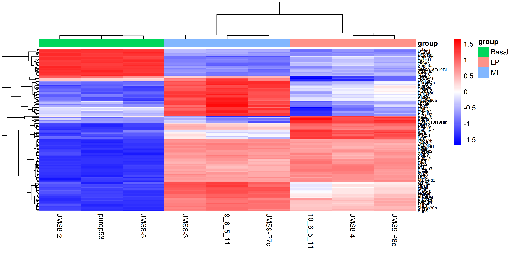
The samples cluster by cell type, so the three replicates of each group sit next to each other. The genes form blocks that are high in one group and low in the others, reflecting the genes that distinguish each cell type. Because each row is scaled to a z-score, the colour shows whether a gene is high or low relative to its own average across samples, not its absolute expression level: a red cell in one row and a red cell in another do not mean the two genes are expressed at similar levels.
2.13 Saving all the results
Now that we have the DE results, the MA plots and the heatmap, we can save them to an output folder. The code below writes the full top table for each of the three contrasts to a CSV file, saves an MA plot for each contrast and saves the heatmap. These figures may form the basis for publication figures, and the full tables can be included as supplementary files.
dir.create("output", showWarnings = FALSE)
# save the full top table for each contrast
write_csv(topTable(efit, coef = "BasalvsLP", n = Inf), "output/top_genes_BasalvsLP.csv")
write_csv(topTable(efit, coef = "BasalvsML", n = Inf), "output/top_genes_BasalvsML.csv")
write_csv(topTable(efit, coef = "LPvsML", n = Inf), "output/top_genes_LPvsML.csv")
# save the MA plot for each contrast
png("output/ma_plot_BasalvsLP.png", width = 7, height = 6, units = "in", res = 300)
plotMA(efit, coef = "BasalvsLP", status = dt[, "BasalvsLP"])
dev.off()png
2 png("output/ma_plot_BasalvsML.png", width = 7, height = 6, units = "in", res = 300)
plotMA(efit, coef = "BasalvsML", status = dt[, "BasalvsML"])
dev.off()png
2 png("output/ma_plot_LPvsML.png", width = 7, height = 6, units = "in", res = 300)
plotMA(efit, coef = "LPvsML", status = dt[, "LPvsML"])
dev.off()png
2 # save the heatmap
ggsave("output/heatmap.png", heatmap$gtable, height = 10, width = 7)2.14 Recap
We have used limma-voom to find the genes that are differentially expressed between each pair of the three cell types: basal, LP and ML. The pipeline, with the key function for each step, was:
- Build the count object from the counts and sample metadata with
DGEList(). - Remove lowly expressed genes with
filterByExpr(). - Normalise for library size and RNA composition with
normLibSizes(). - Check sample relationships with
plotMDS(). - Set up the design and comparisons with
model.matrix()andmakeContrasts(). - Model the mean-variance relationship with
voom(). - Fit the linear model with
lmFit()andcontrasts.fit(). - Compute moderated statistics with
eBayes(). - Summarise and extract results with
decideTests()andtopTable().
2.14.1 Applying this to your own data
- Read in your counts matrix and sample metadata, check that the samples line up, and build the object with
DGEList(). - Set up
groupand the design matrix to match your experiment. - Choose contrasts that answer your own questions.
- For more complex designs, see the
limmaUser’s Guide (help("limma")) and the RNAseq123 workflow.
3 Extra content
3.1 MDS plot with ggplot2
For more customisability and better consistency with the style of other plots, it’d be nice to be able to draw the MDS plot using ggplot2. In order to do this we would need the MDS coordinates calculated by plotMDS(). Luckily the documentation of plotMDS() shows that it returns multiple computed values.
mds_result <- plotMDS(dge, plot = FALSE)
mds_resultAn object of class MDS
$eigen.values
[1] 6.844419e+01 1.154413e+01 3.790044e+00 2.994025e+00 2.021565e+00
[6] 1.613173e+00 1.202805e+00 1.094072e+00 -3.038972e-15
$eigen.vectors
[,1] [,2] [,3] [,4] [,5] [,6]
[1,] -0.2461859 0.54036454 0.12401524 0.677678569 0.20623170 0.07294476
[2,] -0.2851986 -0.33460855 0.67471878 0.007007206 -0.46099085 0.15319914
[3,] 0.4690174 -0.04145263 0.05041410 0.056945694 -0.03695319 -0.03494949
[4,] 0.4711165 -0.04907588 0.05443024 0.161230059 -0.03439028 -0.55065413
[5,] -0.2626081 -0.18747095 0.18504793 -0.355202862 0.66319443 -0.33464804
[6,] -0.1568565 0.41423458 -0.09091514 -0.468642654 0.04620796 0.26492304
[7,] 0.4670465 0.01138476 -0.03115306 -0.161357159 0.07822632 0.56941932
[8,] -0.2405667 -0.57831836 -0.56474831 0.302172046 0.07568690 0.20422089
[9,] -0.2157647 0.22494250 -0.40180977 -0.219830899 -0.53721300 -0.34445549
[,7] [,8] [,9]
[1,] -0.11742920 -0.004177629 -0.3333333
[2,] 0.04463732 -0.048147665 -0.3333333
[3,] 0.03859114 0.810760474 -0.3333333
[4,] 0.33482254 -0.468041790 -0.3333333
[5,] -0.26519650 0.047152480 -0.3333333
[6,] 0.62647876 -0.002850499 -0.3333333
[7,] -0.44130343 -0.344258233 -0.3333333
[8,] 0.19689394 -0.010674134 -0.3333333
[9,] -0.41749458 0.020236996 -0.3333333
$var.explained
[1] 0.73830888 0.12452679 0.04088328 0.03229660 0.02180666 0.01740133 0.01297468
[8] 0.01180178 0.00000000
$dim.plot
[1] 1 2
$distance.matrix.squared
10_6_5_11 9_6_5_11 purep53 JMS8-2 JMS8-3 JMS8-4
10_6_5_11 -18.127013 -5.738791 16.10192 16.03204 -5.792252 -8.3908112
9_6_5_11 -5.738791 -18.115187 17.75982 17.85109 -11.197198 -2.5513014
purep53 16.101924 17.759816 -31.64208 -29.63783 16.733543 10.6453322
JMS8-2 16.032036 17.851094 -29.63783 -32.34830 16.749432 11.0446228
JMS8-3 -5.792252 -11.197198 16.73354 16.74943 -13.580395 -4.1528811
JMS8-4 -8.390811 -2.551301 10.64533 11.04462 -4.152881 -9.8867331
JMS8-5 15.954448 18.363197 -29.18038 -28.91308 16.698190 9.6067888
JMS9-P7c -1.642914 -10.966083 15.03939 15.00405 -9.571938 0.3388923
JMS9-P8c -8.396628 -5.405548 14.18030 14.21798 -5.886502 -6.6539093
JMS8-5 JMS9-P7c JMS9-P8c
10_6_5_11 15.954448 -1.6429143 -8.396628
9_6_5_11 18.363197 -10.9660831 -5.405548
purep53 -29.180384 15.0393893 14.180296
JMS8-2 -28.913082 15.0040512 14.217981
JMS8-3 16.698190 -9.5719377 -5.886502
JMS8-4 9.606789 0.3388923 -6.653909
JMS8-5 -31.824715 15.4926837 13.802874
JMS9-P7c 15.492684 -18.8595492 -4.834532
JMS9-P8c 13.802874 -4.8345322 -11.024033
$top
[1] 500
$gene.selection
[1] "pairwise"
$axislabel
[1] "Leading logFC dim"
$x
[1] -2.036721 -2.359477 3.880228 3.897594 -2.172583 -1.297689 3.863923
[8] -1.990232 -1.785043
$y
[1] 1.83597803 -1.13688798 -0.14084219 -0.16674343 -0.63696359 1.40743060
[7] 0.03868159 -1.96493242 0.76427939We see that there are x and y values in the list returned by the plotMDS() function. We can put these into a table and see if they match up to the positions plotted by the function.
mds_tibble <- tibble(
x = mds_result$x,
y = mds_result$y
)
ggplot(mds_tibble, aes(x = x, y = y)) +
geom_point()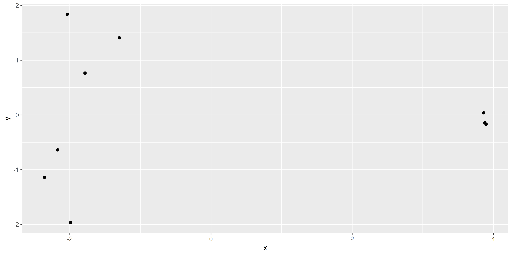
The positions of the points and the range of the scales seem to match, so we want to add in more metadata to help us plot. We can try to recreate the MDS plot using just ggplot2.
mds_tibble <- tibble(
x = mds_result$x,
y = mds_result$y,
sample = colnames(dge),
group = dge$samples$group
)
dim1_var_explained <- round(mds_result$var.explained[1] * 100)
dim2_var_explained <- round(mds_result$var.explained[2] * 100)
ggplot(mds_tibble, aes(x = x, y = y)) +
geom_text(aes(label = group)) +
labs(
x = paste0("Leading logFC dim 1 ", "(", dim1_var_explained, "%)"),
y = paste0("Leading logFC dim 2 ", "(", dim2_var_explained, "%)")
)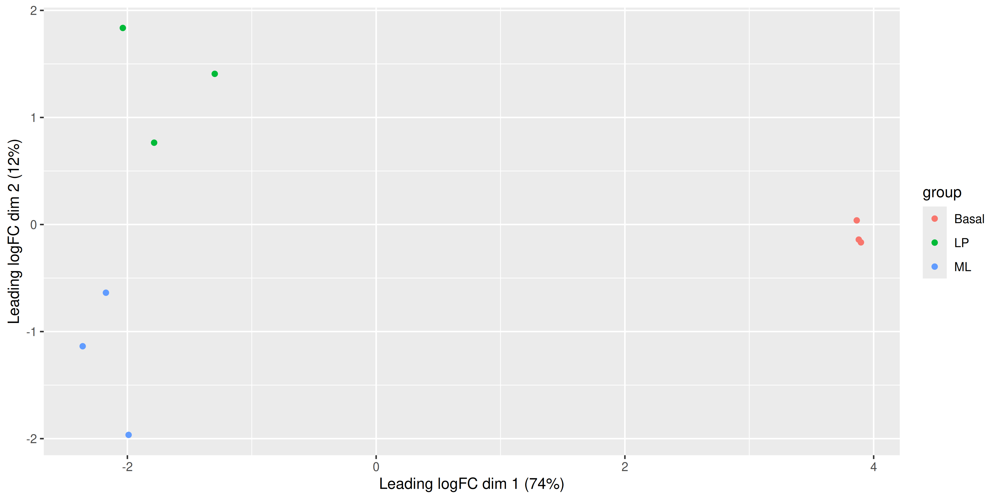
Now that we have our data in a nice tidy format we can use with ggplot2, it’s easy to create variations of the plot. For example we can draw points instead of group labels, and use colour to identify the groups.
ggplot(mds_tibble, aes(x = x, y = y, col = group)) +
geom_point() +
labs(
x = paste0("Leading logFC dim 1 ", "(", dim1_var_explained, "%)"),
y = paste0("Leading logFC dim 2 ", "(", dim2_var_explained, "%)")
)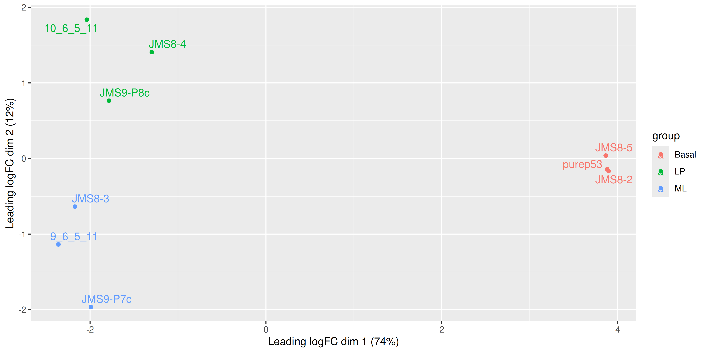
Alternatively we can also use the labels to identify the individual samples while colouring them by their group.
ggplot(mds_tibble, aes(x = x, y = y, col = group)) +
geom_text(aes(label = sample)) +
labs(
x = paste0("Leading logFC dim 1 ", "(", dim1_var_explained, "%)"),
y = paste0("Leading logFC dim 2 ", "(", dim2_var_explained, "%)")
)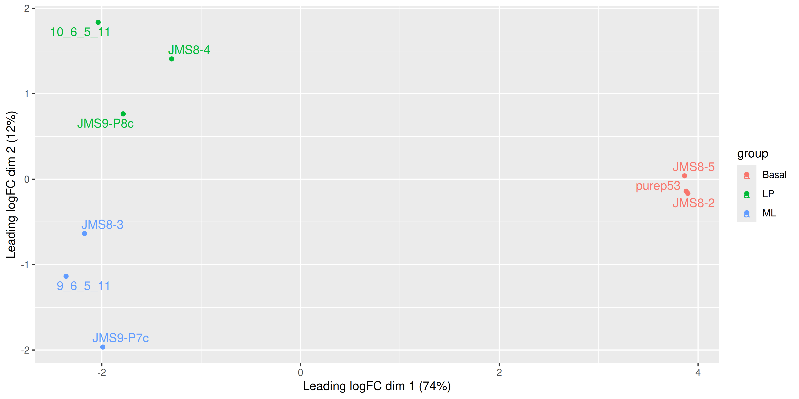
We see that some labels are very hard to read because they overlap, so we can use the ggrepel package to fix this. The ggrepel package creates labels that repel each other in order to avoid overlap. It’s a good idea to use it in conjunction with geom_point() in order to keep track of exact coordinates of the data points.
library(ggrepel)
ggplot(mds_tibble, aes(x = x, y = y, col = group)) +
geom_point() +
geom_text_repel(aes(label = sample), show.legend = FALSE) +
labs(
x = paste0("Leading logFC dim 1 ", "(", dim1_var_explained, "%)"),
y = paste0("Leading logFC dim 2 ", "(", dim2_var_explained, "%)")
)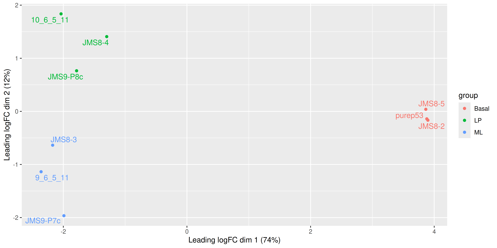
3.2 MA plot with ggplot2
We can try to recreate this plot using ggplot2 to give us more flexibility in plotting. The information we’ll need is the log-fold-change, the average log-expression and the differential expression status of each gene. We can extract this information from the efit and dt objects we created above, as well as gene names for annotation purposes.
ma_plot_data <- tibble(
logFC = efit$coefficients[, "BasalvsLP"],
AvgExpr = efit$Amean,
status = factor(as.numeric(dt[, "BasalvsLP"])),
gene = efit$genes$SYMBOL,
p_value = efit$p.value[, "BasalvsLP"]
)With our tibble prepared, we can use ggplot2 to create the plot as we have done before:
ma_plot_data %>%
ggplot(aes(x = AvgExpr, y = logFC, col = status)) +
geom_point()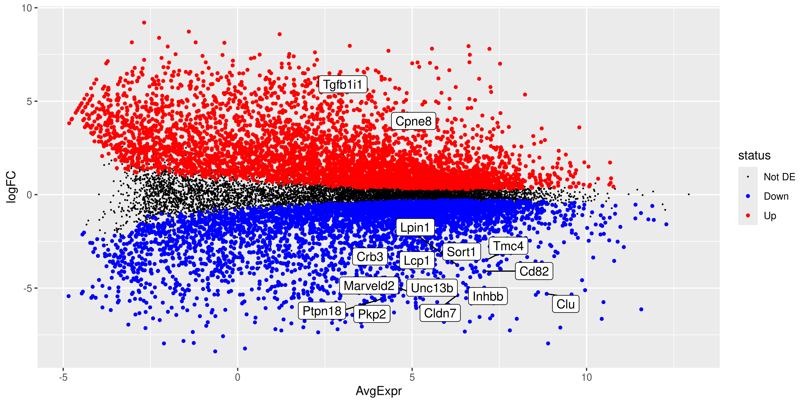
While the coordinates of the points are the same, there is still quite a bit of work to do to make this plot look like the one produced by plotMA(). First, we fix the colours. Second, we draw the non-significant points in their own layer underneath, so they don’t hide the DE genes. Finally, we label the 15 most significant genes with ggrepel.
ma_plot_data_fct <- ma_plot_data %>%
mutate(
status = fct_recode(
status,
"Not DE" = "0",
"Down" = "-1",
"Up" = "1"
)
) %>%
mutate(status = fct_relevel(status, "Not DE", "Down", "Up"))
top_de_genes <- ma_plot_data_fct %>%
arrange(p_value) %>%
slice_head(n = 15)
scale_cols <- c(
"Not DE" = "black",
"Down" = "blue",
"Up" = "red"
)
ma_plot <- ma_plot_data_fct %>%
ggplot(aes(x = AvgExpr, y = logFC, col = status)) +
geom_point(data = ma_plot_data_fct %>% filter(status == "Not DE"), size = 0.1) +
geom_point(data = ma_plot_data_fct %>% filter(status != "Not DE"), size = 1) +
geom_label_repel(
data = top_de_genes,
aes(label = gene, col = NULL),
max.overlaps = 20,
show.legend = FALSE
) +
scale_colour_manual(values = scale_cols)
ma_plot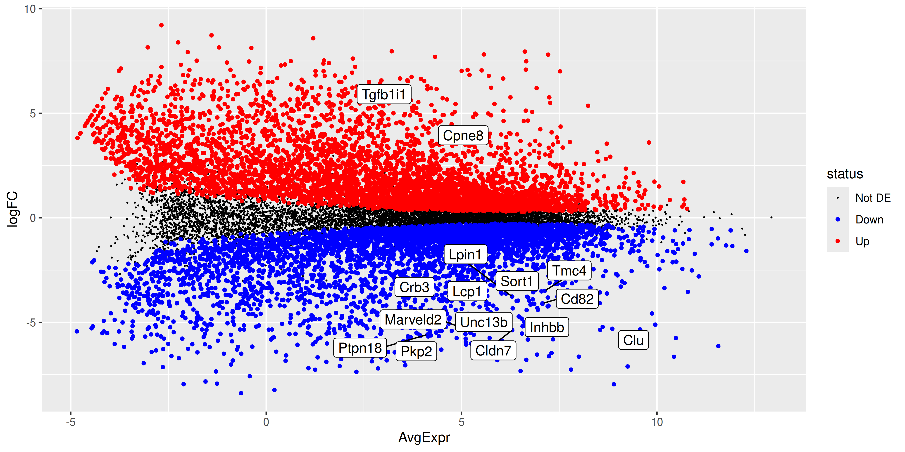
ggsave("output/ma_plot_ggplot_BasalvsLP.png", ma_plot)Saving 10 x 5 in image3.3 Volcano plot
Since we have the tibble of the data prepared, we can also choose to create an alternative plot called a volcano plot, which is also very popular in RNA-seq analysis. The volcano plot is a scatter plot of the negative log10 p-value against the log2-fold-change. This plot is useful for visualising the significance of the differentially expressed genes.
volcano_plot <- ma_plot_data_fct %>%
ggplot(aes(x = logFC, y = -log10(p_value), col = status)) +
geom_point(data = ma_plot_data_fct %>% filter(status == "Not DE"), size = 0.1) +
geom_point(data = ma_plot_data_fct %>% filter(status != "Not DE"), size = 1) +
geom_label_repel(
data = top_de_genes,
aes(label = gene, col = NULL),
max.overlaps = 20,
show.legend = FALSE
) +
scale_colour_manual(values = scale_cols)
volcano_plot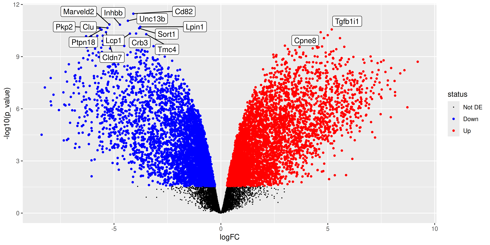
ggsave("output/volcano_plot_BasalvsLP.png", volcano_plot)Saving 10 x 5 in image3.4 Closing remarks
Tools such as large language models (LLMs) can now write an analysis like this one in seconds. What they cannot do is look at your experiment and tell you whether the result is right. That judgement is yours, and it is the most valuable thing to take from this workshop.
Whoever writes the code, whether you, a colleague or an LLM, check the analysis by asking:
- Do the rows of the sample metadata match the columns of the count matrix?
- What separates the samples on the MDS plot? Is it the biology you expect, or something technical such as sequencing lane or batch?
- Does the voom plot show a smooth trend that decreases with expression? A rise at the low-expression end suggests filtering was insufficient.
- Does the design matrix match the experiment, and does each coefficient mean what you think it means?
- Which way round is each contrast? A positive
logFCmeans higher expression in the first group. - Are significance calls based on adjusted p-values (
adj.P.Val) rather than raw p-values? - Do the top genes look right when you plot their expression in each sample?
When an answer surprises you, read the help page of the function involved. Most analyses go wrong in the defaults and assumptions described there, not in the code itself.
3.5 References
1.
McIntyre LM, Lopiano KK, Morse AM, Amin V, Oberg AL, Young LJ, et al. RNA-seq: Technical variability and sampling. BMC Genomics [Internet]. 2011 June 6;12(1). Available from: http://dx.doi.org/10.1186/1471-2164-12-293
2.
Bourgon R, Gentleman R, Huber W. Independent filtering increases detection power for high-throughput experiments. Proceedings of the National Academy of Sciences [Internet]. 2010 May 11;107(21):9546–51. Available from: http://dx.doi.org/10.1073/pnas.0914005107
3.
Robinson MD, Oshlack A. A scaling normalization method for differential expression analysis of RNA-seq data. Genome Biology [Internet]. 2010 Mar 2;11(3). Available from: http://dx.doi.org/10.1186/gb-2010-11-3-r25
4.
Benjamini Y, Hochberg Y. Controlling the false discovery rate: A practical and powerful approach to multiple testing. Journal of the Royal Statistical Society Series B: Statistical Methodology [Internet]. 1995 Jan 1;57(1):289–300. Available from: http://dx.doi.org/10.1111/j.2517-6161.1995.tb02031.x